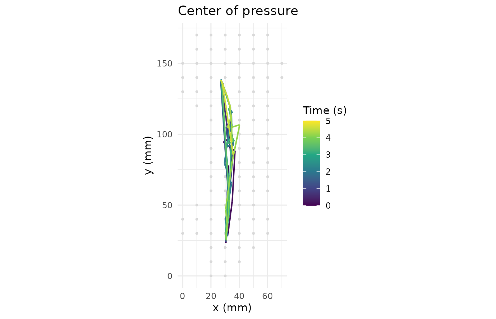
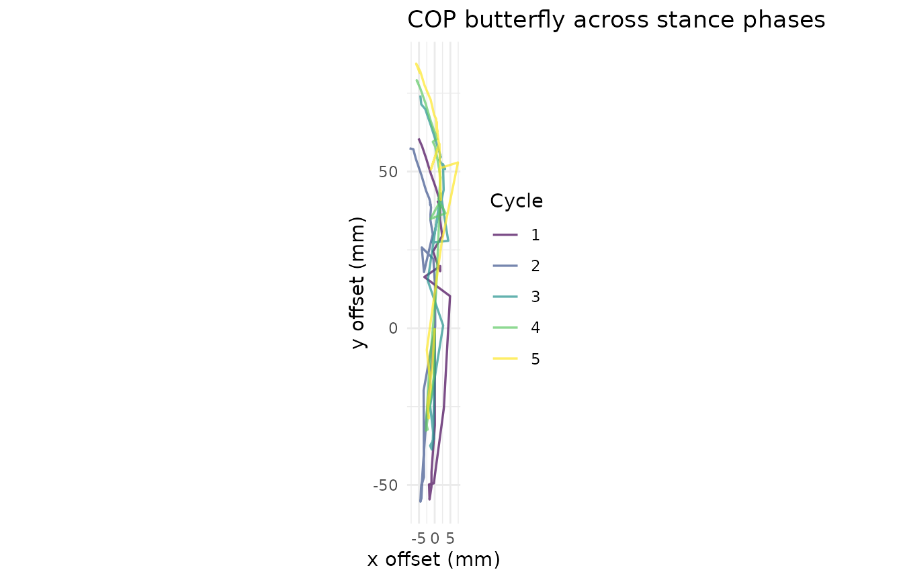

Foot Pressure Analysis for Pedography and Gait Assessment
Source:vignettes/foot-pressure-analysis.Rmd
foot-pressure-analysis.RmdPlantar-pressure measurement is used in pedography, gait analysis, and diabetic-foot risk assessment. This vignette demonstrates the workflow on a synthetic pedar trial.
trial <- pr_example_trial("pedar")
trial
#>
#> ── pr_trial ────────────────────────────────────────────────────────────────────
#> • System: "pedar"
#> • Layout: "pedar_standard"
#> • Frames: 250
#> • Duration: 5 s
#> • Sampling: 50 Hz
#> • Sensors: 99
#> • Subject: "EX01"
#> • Date: "2026-04-17"
#> • Condition: "walking"Gait cycle detection
cycles <- pr_calc_gait_cycles(trial)
cycles
#> # A tibble: 5 × 8
#> cycle heel_strike_frame toe_off_frame heel_strike_time toe_off_time
#> <int> <int> <int> <dbl> <dbl>
#> 1 1 1 30 0 0.582
#> 2 2 51 80 1.00 1.59
#> 3 3 101 130 2.01 2.59
#> 4 4 151 180 3.01 3.59
#> 5 5 201 230 4.02 4.60
#> # ℹ 3 more variables: stance_duration <dbl>, start_frame <int>, end_frame <int>Center of pressure and rollover
pr_plot_cop(trial)
pr_plot_cop_butterfly(trial)
Regional analysis
pr_calc_regional(trial)
#> # A tibble: 7 × 6
#> region mpp mvp max_force contact_area pti_mean
#> <chr> <dbl> <dbl> <dbl> <dbl> <dbl>
#> 1 heel 220. 15.0 357. 42 40.2
#> 2 midfoot 646. 59.6 1248. 61.5 155.
#> 3 metatarsal_1 130. 23.0 41.9 6 65.4
#> 4 metatarsal_2_3 224. 43.3 116. 9 127.
#> 5 metatarsal_4_5 137. 15.9 49.1 9 43.8
#> 6 hallux 265. 29.9 120. 6 83.8
#> 7 lesser_toes 190. 12.9 73.1 12 30.0Diabetic foot thresholds
pr_ref_diabetic_foot()
#> # A tibble: 4 × 6
#> region parameter threshold unit interpretation source
#> <chr> <chr> <dbl> <chr> <chr> <chr>
#> 1 any plantar mpp 200 kPa Elevated ulceration risk (Armstr… Armst…
#> 2 any plantar pti_mean 70 kPa*s Pressure-time integral associate… Casel…
#> 3 forefoot mpp 400 kPa High-risk forefoot peak pressure… Veves…
#> 4 heel mpp 250 kPa Heel threshold reported in mixed… Frykb…